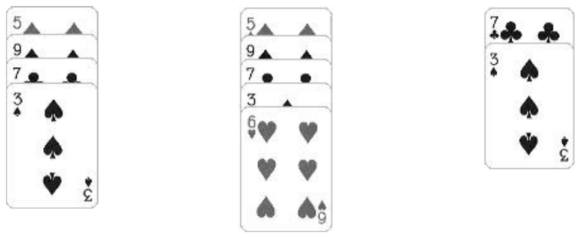
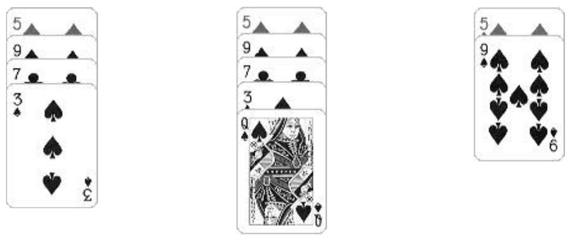

The Twentieth Annual ACM International Collegiate Programming Contest Finals · Problem A
A simple solitaire card game called 10-20-30 uses a standard deck of 52 playing cards. The value of a face card (king, queen, jack) is 10. The value of an ace is one. The value of each of the other cards is the face value of the card (2, 3, 4, etc.). You begin by dealing out seven cards, left to right. Continue by dealing the topmost cards from the deck onto successive piles, proceeding from left to right. After playing a card on the rightmost pile, the next pile upon which you play a card is the leftmost pile.
For each card placed on a pile, check to see if the sum of three successive cards totals 10, 20, or 30. If so, pick up the three cards and place them on the bottom of the deck. The successive three cards can be:
Here, the top of the pile refers to the card uppermost on the board, not the card on top of the others. For this problem, always check the pile in the order just described. Collect the cards in the order they appear on the pile, turned over (face down), and then put at the bottom of the deck. Picking up three cards may expose three more cards that can be picked up. If so, pick them up. Continue until no more sets of three can be picked up from the pile.
For example, suppose a pile contains 5 9 7 3 where the 5 is at the top of the pile, and then a 6 is played. The top two cards plus the bottom card (5 + 9 + 6) sum to 20. The new contents of the pile after picking up those three cards becomes 7 3. Also, the bottommost card in the deck is now the 6, the card above it is the 9, and the one above the 9 is the 5.

However, if a queen were played, 5 + 9 + 10 = 24, and 5 + 3 + 10 = 18, but 7 + 3 + 10 = 20, so the bottom three cards would be picked up, leaving the pile as 5 9.

If a pile contains only three cards when the three sum to 10, 20, or 30, then the pile “disappears” when the cards are picked up. That is, subsequent play skips over the position the now-empty pile occupied. You win if you manage to pick up all of the cards. You lose if you deal all of the cards out of the deck onto the piles. It is also possible to have a draw if neither of the previous two conditions ever occurs.
Write a program that will play a games of 10-20-30 given initial card decks as input.
Each input set consists of 52 integers separated by spaces and/or ends of lines. The values of the integers represent card values of the initial deck for that game. You may assume the input represents a proper deck. Input is terminated by a line containing a single zero (0).
For each input line, output whether the result of the game is a win, loss, or a draw, and output the number of times a card is played onto a pile before the game results can be determined. (A draw occurs as soon as the state of the game is repeated.) Use the format shown in the “Output for the Sample Input” section.
2 6 5 10 10 4 10 10 10 4 5 10 4 5 10 9 7 6 1 7 6 9 5 3 10 10 4 10 9 2 1 10 1 10 10 10 3 10 9 8 10 8 7 1 2 8 6 7 3 3 8 2 4 3 2 10 8 10 6 8 9 5 8 10 5 3 5 4 6 9 9 1 7 6 3 5 10 10 8 10 9 10 10 7 2 6 10 10 4 10 1 3 10 1 1 10 2 2 10 4 10 7 7 10 10 5 4 3 5 7 10 8 2 3 9 10 8 4 5 1 7 6 7 2 6 9 10 2 3 10 3 4 4 9 10 1 1 10 5 10 10 1 8 10 7 8 10 6 10 10 10 9 6 2 10 10 0
Win : 66 Loss: 82 Draw: 73